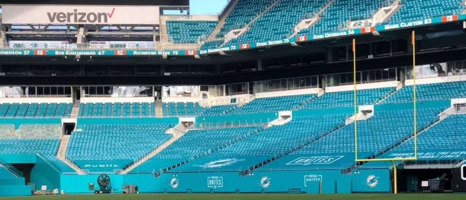
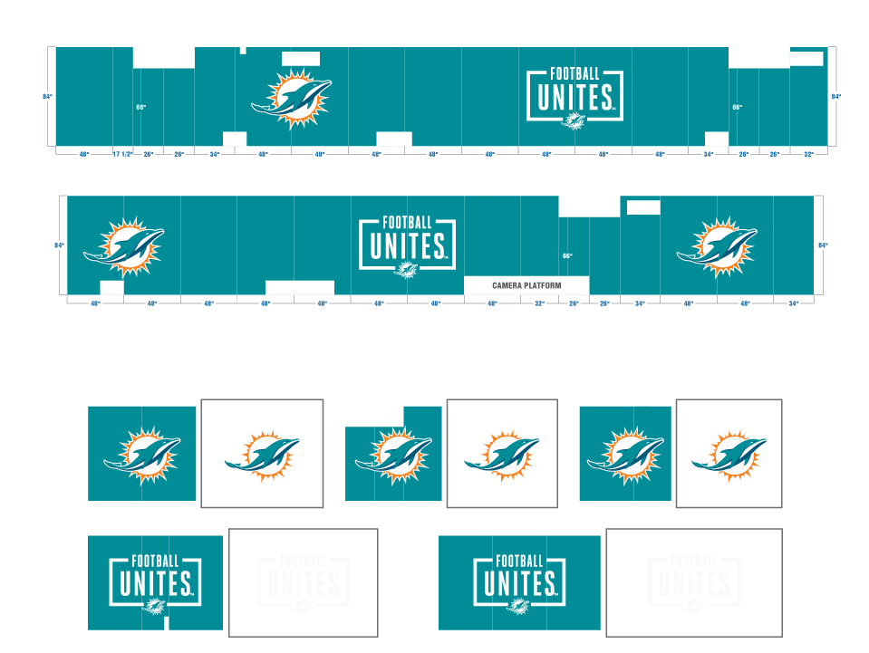
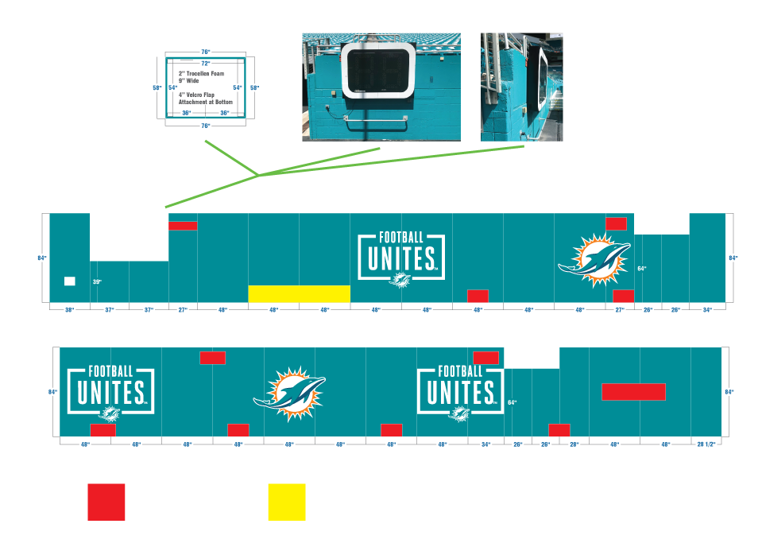
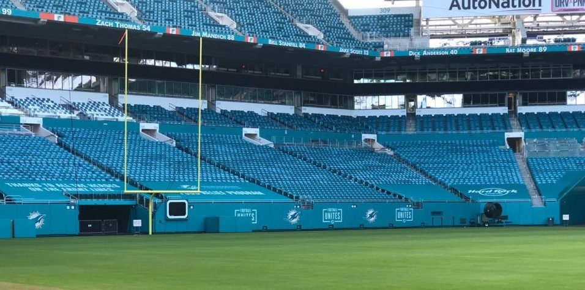

Consistency in the powerful "Football Unites" messaging was a top priority. This inspiring phrase was strategically incorporated into the graphics throughout the stadium, creating a unifying atmosphere for fans. The messaging served as a constant reminder of togetherness and inclusivity.

Thorough analysis of the stadium's architecture guided the placement of graphics. Key locations were identified to maximize visibility and impact, while maintaining a cohesive and visually appealing environment. Even spacing of the graphics created a harmonious visual experience.



To ensure unobstructed views, careful consideration was given to physical elements such as TV cameras. Graphics were strategically positioned to avoid interference, ensuring clear visibility and an uninterrupted fan experience.
